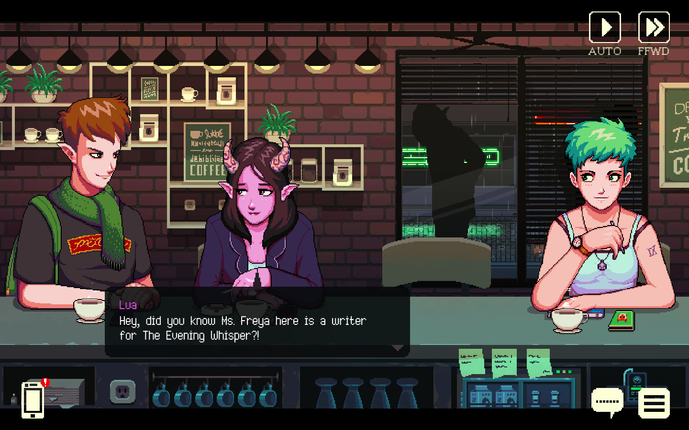

Talala Lodge
Pitch Deck
About The Studio
BeachHead Labs is a newly-established game development studio
located in the picturesque island country of Mauritius, just off
the coast of Southern Africa.
We're passionately crafting new prototypes, drawing inspiration
from the rich creative landscape of both the island and the
broader Southern African region.
The Hook
Juggling cutthroat alliances and ethical tightropes, will
your story unfold as an eco-triumph or a calculated gamble gone
awry?
Buckle in to go off the beaten track in this emotionally charged,
strategic management adventure game
as you step into the shoes of a safari lodge manager!
Hook (Expanded)
Our gameplay loop immerses you in the struggles and rewards of
both business management and ethical decision-making. Build
relationships with key characters—from local government officials
who hold sway over your land, to influential visitors like tech
moguls who offer game-changing resources like satellite feeds.
Burning bridges with the authorities? Brace yourself for a
cutback in trade options.
Win the favor of influential guests? Unlock a world of
strategic possibilities, each choice spiraling out into myriad
outcomes, making your story truly unique. Navigate intricate
logistics like optimizing safari routes for customer satisfaction
and budget concerns. Just don't think about introducing new
species—that's highly illegal and will have serious repercussions
for both you and the Kruger ecosystem. Feel the weight of every
decision you make. With the wellbeing of of the park hanging in
the balance, every choice you make echoes in the corridors of
power and the heart of the wilderness. Will your story be one of
ecological triumph?, or a calculated plan gone awry?
Why this prototype should exist
With a focus on relationship building and the moral dilemmas that
unfold within your natural surroundings, we specifically want to
prototype the interplay between the in-game moment to moment
actions, and the emergent world events.
This is to ensure we can make the player feel the weight of their
decisions on the environment around them in surprising ways,
leading to many hours of replayability
Look and Feel
UI Reference: Into the Breach

'Simple' UX & UI
'Simple' game systems with emergent properties
Art Reference
 High fidelity rendering
Not too close to the action but not too far away
High fidelity rendering
Not too close to the action but not too far away
Mechanical References
XCOM 2

Scarce Resource Manangement
Tactical control of units (staff, cars etc)
Minimal or no base building
Coffee Talk

Relationship Management
Dynamic choice based story
Moment to moment play involving talking to characters and
making decisions
Moment to Momement gameplay(1)
Map / Satellite View
You survey a map of your ocncession and see a scout vehicle drive
around the map. An area highlights with a potential predator
sighting, with 50% sighting probability. A second area highlights
with a potential predator sighting, with 80% sighting probability.
you press on a sector with a sighting and deploy two rangers to
clear a path to make it easier for you traverse with your game
vehicles later on.
Switch to Relationship View
You see that another lodge owner is requesting assistance from you
for fuel, as there has been a delay in delivery. You take note of
your fuel reserves on the taskbar and decide that you do not want
to assist as you then you will be out of fuel (... continue on
next slide)
Moment to Momement gameplay (2)
Switch back to Satellite View
You Select a cell with an active sighting and click "Send Game
Drive Vehicle" A load out appears where you select your vehicle,
crew, gear and guests. You selected an opened topped vehicle, with
an armed rangers You select a high profile guest offering to pay
3x rate You watch vehicle move across map. You get an incident
alert.
Game switches to Game-Drive mode
Based on your load out, relationship choices and guest
interations, a scenario will play out. Your truck breaks down,
roaring is heard in the distance. Driver radios in incident. You
select option to secure the perimeter round the vehicle and keep
the guests safe. The noise attracts the lion. How do you want to
handle the situation? Select option to try and scare off the lion
by making a noise to avoid using the gun. The lion gets
aggressive. (continued on next slide)
Moment to Momement gameplay (3)
You Can: Shoot the lion, Call for help, Do nothing and hope it
leaves You choose to shoow the lion with your ranger.
Satellite View
A progress bar fills up as the mission vehicle is being repaired.
The drive car carries on the path and spoths animals on the map
which dissapear with a flourish The vehicle returns to map.
Lodge View
Guests disemark from the vehicle and return to their cabins Night
Passes
Relationship View
You killed the head of a lion pack, which damages your
relationships with neighbouring lodge owner. You tell the lodge
owner it was necessary to save the guest. They remain unconvined.
Switch back to satellite View
You want to deploy another game drive but you notice your fuel is
low, so you try and trade with the neighbouring lodge owner...
The Ask
$80 000 prototyping budget over 4-6 months.
The Team
Shane Marks - With an extensive background in
programming, design and business. He has previously built a
successful game services company in South Africa, with 35 full
time professionals. He recently moved into own -IP creation. His
first title, Metavoidal, will be published by Astrolabe Games on
Windows Apple and Xbox
RenderHeads South Africa - Our partner
development studio bring world class game development
capabilities at the tip of Africa. Previous titles worked on
include.
Metavoidal
TABS VR
Memoire Blue
12 Minutes.
Person 3TODO
Road-map
15 - 25 hours gameplay.
Total development time: 2 - 3 years post prototype.
$2 - $2.5million production budget to game release.
We would like to avoid early access given the story rich
nature of the game.
Team structure of 3 teams made led by a programmer, 3D artist
and UI Designer.
Platform: Desktop (PC + Mac)
Thank you
Thank you for taking the time to review this proposal.
All feedback is greatly appreciated, we can be contacted @
shane@beachhead-labs.mu.
© BeachHead Labs 2023.